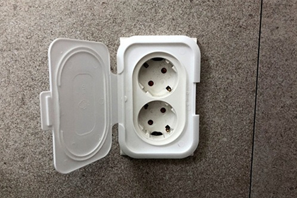
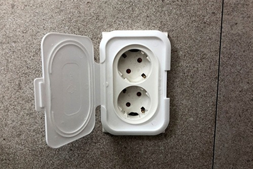

- Name : 박지혜
- Birth : 1991. 06. 21
- Addrress : 서울시 강서구 화곡동
- Phone : 010-2700-3594
- Email : akfmswi54@gmail.com
미완성...작업중입니다
park ji hye
CREATIVE PUBLISHER
높이높이 날아 비상할 준비가 되어있는 나비같은 웹퍼블리셔 박지혜 입니다.
스크롤바를 내리면 작품을 감상할 수 있습니다.
ABOUT ME
VISION
퍼블리셔로써 끝없이 탐구하고 창의적인 아이디어를통해 새로운
시작과,결말을 만드는 존재가 되고싶습니다.
어떤업무를 맡더라도 도움을 줄 수 있는 퍼블리셔가 되는 것이 저의
목표입니다.
예쁜디자인을보고 감탄하는 제모습을보고 나도 다른사람들에게
감탄이 나올수 있을 정도에 디자이너가 될수 있을까?
라는 의문점으로 부터 시작하여 웹디자인에대해 처음 도전해보는
계기가 되었습니다.
아무런 편견없이 포용할수있고 끊임없이 내미래가치에 대한 꿈을 쫒아갈수있도록 좌절하지 않고 성숙해져 갈수있는 사람이 되도록 노력하겠습니다.
WHAT CAN I DO?
중독성있고 독특한 새로운 디자인을 만들수있는 마음으로매일
노력하고 있습니다.
HTML5 & CSS3 시멘틱 페이지를 ZenCoding(EMMET), SCSS 로
코딩할 수 있습니다.
클라이언트의 요구사항을 적극적으로 소통할수있고 반영하는 UI/UX 디자인 능력은 저의 최고의 장점 중 하나입니다.
JS 플러그인을 사용에 그치지 않고 필요한 기능을 직접 구현할 수
있는 Javascript/jQuery/React 로직구현이
가능합니다. 새로운 코딩기법과 디자인을 배우는 것이 정말
즐겁습니다.
- ZenCoding(EMMET) & SCSS
- Javascript & jQuery/React 로직구현
- MVC 패턴의 페이지 구성
- RWD 반응형 웹디자인
- HTML5 DTD 유효성 검사 통과
- 웹접근성을 향상시킨 시멘틱 페이지
WORK STYLE
- 구조와 디자인, 기능을 분리한 MVC패턴을 구현
- 자바스크립트와 jQuery / React를 구현
- HTML5 시멘틱과 CSS3 웹페이지를 구현
다른 사람이 말하는 나
-
진란
함께 힘이 되어주는 친구같이 웹퍼블리셔 과정을 들으면서 서로 모르는 것을 알려주어서 힘든 과정에 힘이 되고 있는 친구 입니다! 도 많아 의지가 되는 친구입니다~
-
수경
감정에 솔직하고 행복바이러스를 주는 친구감정적인 부분과 따뜻하게 안아줄 수 있는 배려를 가졌으며 하는 일에 대한 꾸준함과 끈기가 부러운 사람으로 감각적인 유머러스함에 항상 웃게해주는 사람!
-
은하
성실하고 의욕적인 아이디어뱅크차분한 시선과 둥글고 부드러운 성격으로 온화한 분위기를 이끌어가며, 서두르지 않으면서도 자기 페이스를 잃지 않는 의욕적인 모습이 돋보이는 친구입니다. 집중하는 일에 대해 진지한 모습과, 끝없이 쏟아져 나오는 아이디어뱅크로 팀에서 활약하는 모습이 멋있습니다.
SKILL
탁월한 UX분석능력과 Emmet/Zencoding 활용
-
UX/UI 디자인
사용자의 Context와 Needs를 파악하고
Problem을 해결할 수 있는 Insight 도출 -
반응형 웹표준
시멘틱을 지향하는 HTML/CSS 작성능력 보유,
자바스크립트와 제이쿼리 기반의 로직 구현 가능
SASS 전처리기와 리액트 라이브러리 활용
-
Sass Preprocessor
협업 웹코딩의 필수 기술인 SCSS를 이용한
CSS 스타일링을 원활이 사용할 수 있습니다. -
리액트 라이브러리
국내 프론트엔드 시장의 대세 리액트 코드구현,
자바스크립트와 제이쿼리 기반의 로직구현 가능
ABILITY
젠코딩
HTML5
CSS
jQuery
웹기획
디자인
긍정적
적극성
창조성
사교성
책임감
정직성
온라인 이력서
‘스타일을 창조하여 그것을 섬세한 디자인으로 탈바꿈 시키고싶다’
는 마음으로
매일 노력하고 있습니다.
HTML5 & CSS3 시멘틱 페이지를 ZenCoding(EMMET)으로 코딩할 수
있습니다.
클라이언트의 요구사항을 적극적으로 반영하는 UI/UX 디자인 능력은
저의 최고의
장점중 하나입니다.
JS 플러그인을 사용에 그치지 않고 필요한 기능을 직접 구현할 수
있는
Javascript/jQuery/React 로직구현이 가능합니다.
새로운 코딩기법과 디자인을 배우는 것이 정말 즐겁습니다.
UX DESIGN
작품리스트
이전 다음내가 생각하는 사용자경험 - User Experience
UX의 정의에 대해서 알아보고, 다양한 UX의 사례들, 특히나 성공적인
UX라 불리는 사례들을 보면서
사용자 경험을 바탕으로 어떤 제품이나 서비스를 구축하는 것의
중요성을 깨달았다.
내가 생각하는 UX란, 사용자가 원하는 기능을 사용할 때 사용자가
불편함을 느끼지 않고 사용할 수 있도록 하고,
원하는 활동을 편리하게 제품이나 서비스를 이용하여 할 수 있도록
하는 것이라는 생각이 들었다.
사전적인 의미에서 UX란 사람의 여러 감각과 감정의 총합을 뜻하는데,
내가 생각하는 UX는 ‘불편함’이라는,
혹은 다르게 불릴 수도 있는 부정적인 감정을 최소화시키는 것이라는
생각이 든다.
서울시 버스 도착 알림 서비스

디자인과 UX의 차이
- 1. 와인 코르크 마개
-
와인의 코르크 마개를 작은 다육식물
화분으로 업사이클링(Upcycling)한 사례

- 2. 물티슈 보호 캡
-
오염, 수분증발을 방지하는 물티슈 보호
캡을 콘센트 보호 덮개로 활용한 사례
 

UX-DESIGN WORKS
-
UX 조사보고서
사용자경험에 대한 정의, 다양한 UX의 사례, 내가 생각하는 User Experience 토스, 카카오뱅크, 당근마켓

-
디자인과 UX의 차이
일상생활에서 발견한 "디자인과 UX(사용자경험)의 차이" 사례, 문제에 대한 근본원인 서비스경험 시나리오 기획

-
Persona 사용자
정보구조설계(IA), 경험맵등을 작성할 때 의사결정의 준거점으로 활용하는 페르소나 Motive, Pain Point, Needs
UX-DESIGN WORKS
PORTFOLIO
CJ 뉴스룸
CJ NEWS ROOM
작업프로그램 : Photoshop, Visual Studio Code
작업기여도 : 100% 개인 작업

웃는땅콩
웃는땅콩 Renewal Design
기존 웹사이트의 개선사항을 찾아 메인페이지를 리뉴얼
디자인하였습니다.
웃는땅콩의 이미지 아이덴티티를 사용하여 브랜드 이미지를
강조하였으며,
시맨틱태그를 이용한 레이아웃으로 구현하였습니다
작업프로그램 : Photoshop, Visual Studio Code
작업기여도 : 100% 개인 작업


이니스프리
innisfree Site Design
기존 웹사이트의 개선사항을 찾아 메인페이지를 리뉴얼
디자인하였습니다.
이니스프리의 컬러 아이덴티티를 사용하여 브랜드 이미지를
강조하였으며,
시맨틱태그를 이용한 레이아웃으로 구현하였습니다
작업프로그램 : Photoshop, Visual Studio Code
작업기여도 : 100% 개인 작업

밀리의서재
millie Site Design
기존 웹사이트의 개선사항을 찾아 메인페이지를 리뉴얼
디자인하였습니다.
이니스프리의 컬러 아이덴티티를 사용하여 브랜드 이미지를
강조하였으며,
시맨틱태그를 이용한 레이아웃으로 구현하였습니다
작업프로그램 : Photoshop, Visual Studio Code
작업기여도 : 100% 개인 작업